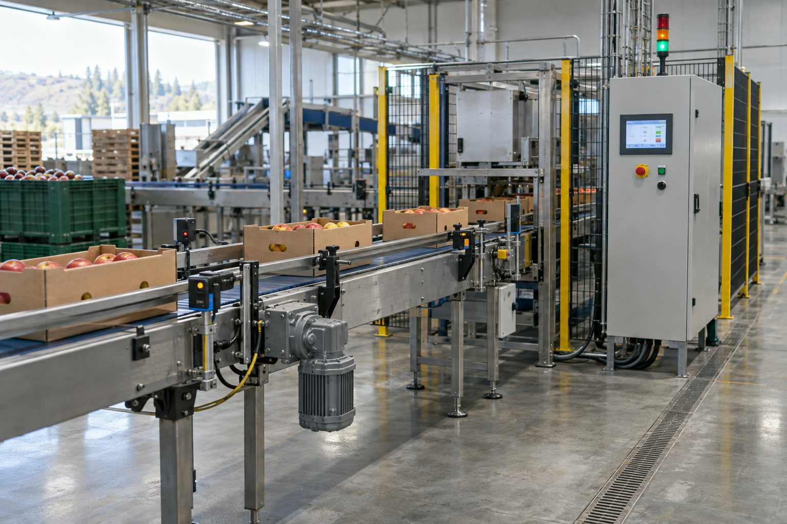
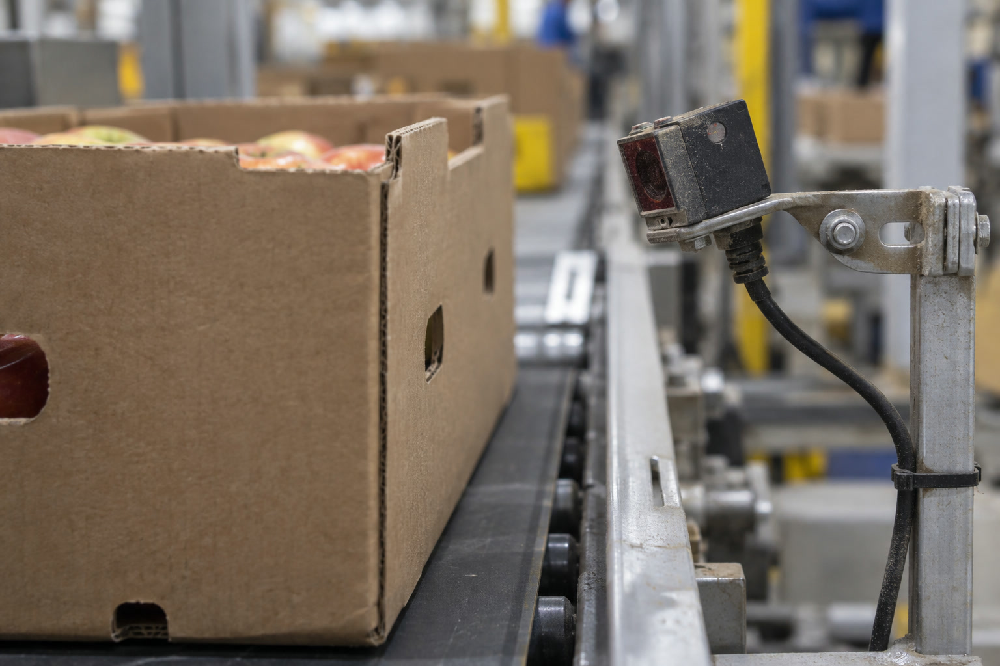
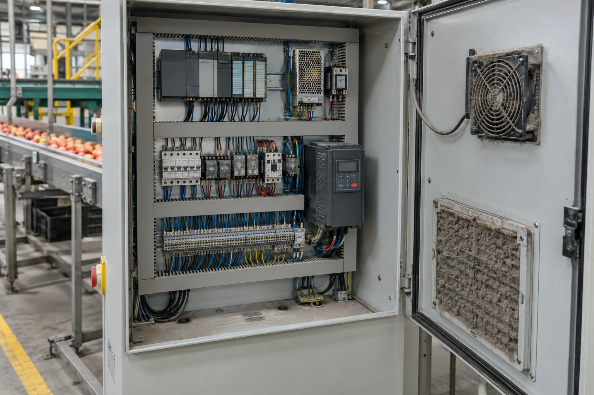

Observa
Describe síntomas y estados sin suposiciones.
I0.0 apagadaNM4 · Unidad 3 · 4°E Electrónica
Convertiremos mediciones, alarmas y fotografías de una línea automatizada en un diagnóstico que permita tomar decisiones.


Describe síntomas y estados sin suposiciones.
I0.0 apagadaRegistra magnitud, valor y unidad.
24,2 VDCUsa manual, plano o plan de mantenimiento.
máximo 40 °CPropone una acción realizable y priorizada.
limpiar y alinear S1Regla: una medición aislada no demuestra que todo el sistema funcione.
Relaciona síntomas, señales, mediciones y una causa comprobable.
Registra limpieza, temperatura, alarmas, repuestos y acciones preventivas.
Documenta versión activa, respaldo, fecha y cambio aplicado al programa.
Planta Valle Lircay embala fruta en cajas. Durante el turno, la cinta se detiene, aparecen alarmas de temperatura y el respaldo del PLC no coincide con el programa activo.
Tu tarea no es “arreglar” el caso: debes informar con precisión qué se comprobó y qué corresponde hacer.
Planta, línea, responsable, fecha y especialidad.
Resumen, antecedentes, objetivos y método.
Diagrama, estados, mediciones, alarmas y fotos.
Hallazgos, riesgos, recomendaciones y conclusión.

Detección: ¿la señal llega desde S1 a I0.0?
Gabinete: ¿la ventilación mantiene los equipos bajo 40 °C?
¿Qué ocurre?
S1 entrega 0,0 VDC y no activa I0.0.
¿Qué debería ocurrir?
Debe conmutar al detectar una caja.
¿Por qué ocurre?
Lente sucio y soporte desalineado.
¿Qué provoca?
Detención del ciclo y pérdida de producción.
¿Qué se hará?
Limpiar, alinear y probar diez detecciones.
Escanea el QR o abre NM4.
Confirma tu RUT y elige individual o pareja. En pareja, valida el RUT del compañero.
Revisa la bitácora y el Hallazgo 1.
Escribe solo en los campos amarillos.
Espera la confirmación del sistema.
estudiacest.com/nm4 → Clase 6 → 4°E Electrónica
Puedes trabajar individualmente o con un compañero de 4°E. En pareja, ambos comparten el borrador y la entrega. En una tablet compartida, presiona Salir al terminar.
Abrir el informe →Obligatorio para entregar: completa todas las casillas amarillas de las páginas 6, 8, 9 y 11. La portada, el resumen, los objetivos y la conclusión son una ampliación si alcanza el tiempo.
¿Por qué medir 24,2 VDC en la fuente no demuestra que el sensor funciona?
Relacionaste señal, entrada del PLC y evidencia escrita.
Podrás documentar una falla sin cambiar componentes por intuición.
El informe permitirá decidir una intervención y conservar su trazabilidad.
Evidencia de la clase: informe entregado en la plataforma y respuesta oral fundamentada.